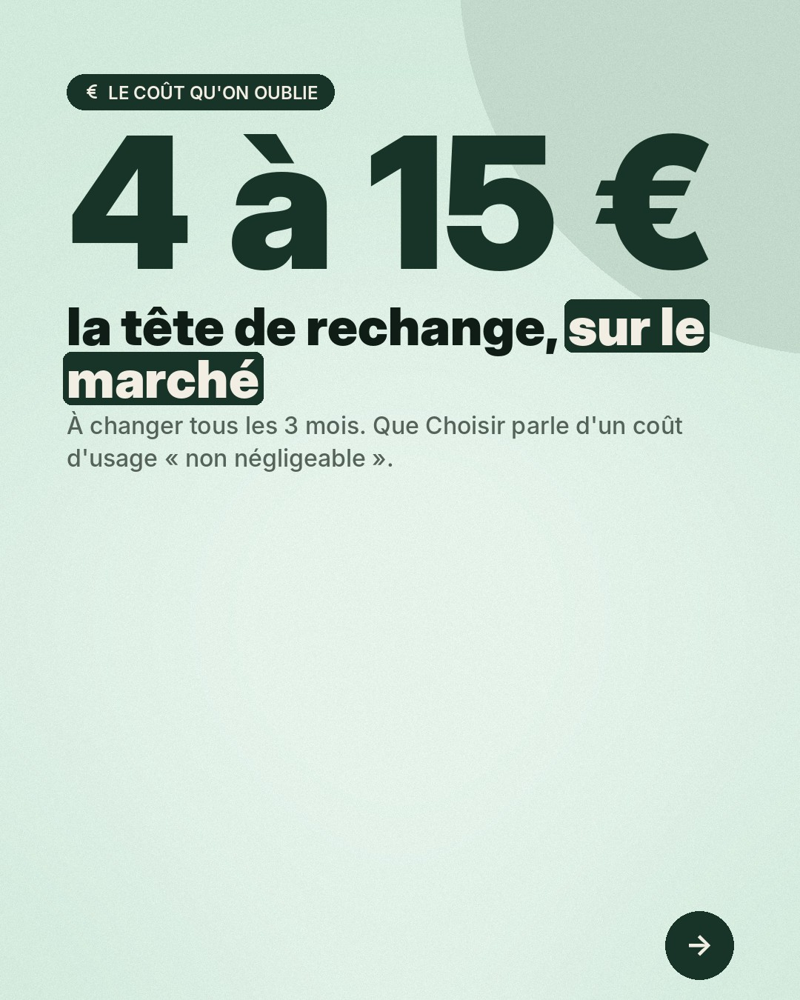
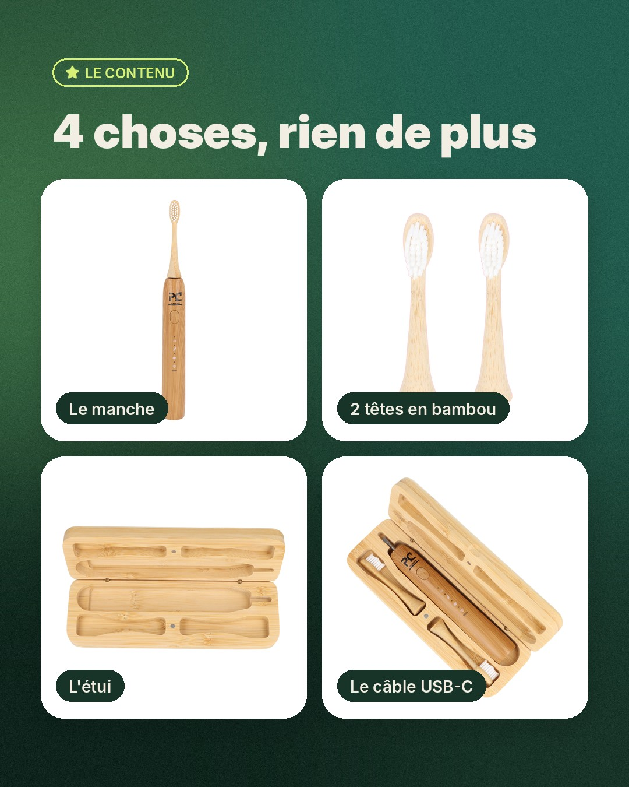
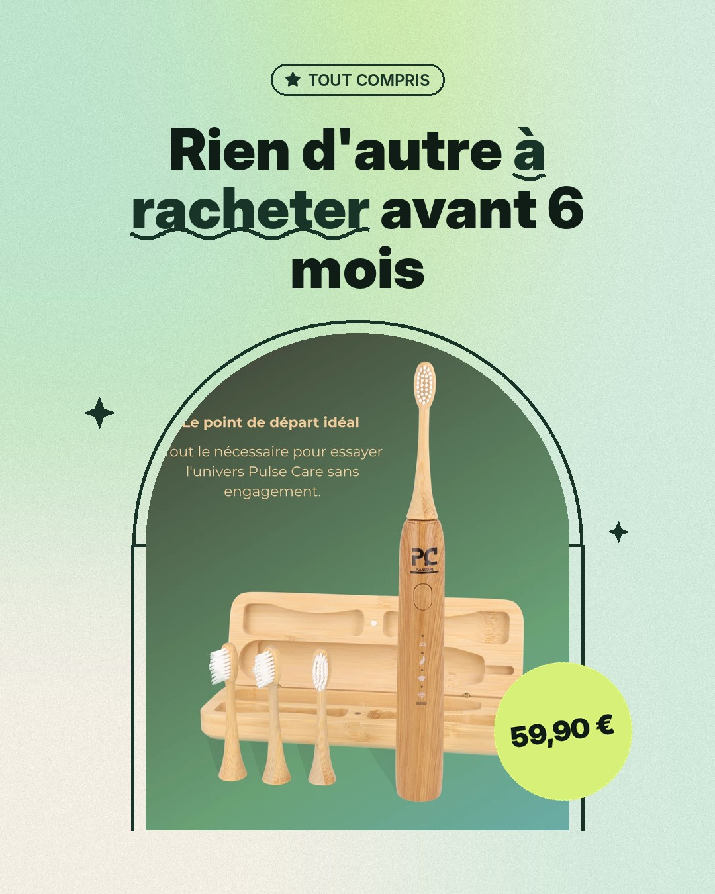

Légende
Avant d'acheter une brosse à dents électrique, regarde le prix des têtes de rechange. C'est là que se joue le vrai budget. Que Choisir chiffre la brossette entre 4 et 15 € selon les marques, à changer tous les 3 mois, et parle d'un coût d'usage « non négligeable ». Chez Pulse Care : → 5,50 € la tête à l'unité → 3,73 € la tête en pack de 4, soit 14,90 € Une tête tous les 3 mois, donc 14,90 € pour l'année. Et le manche, tu le gardes. Swipe pour tout voir. Lien en bio pour voir la gamme Pulse Care. #brosseadentselectrique #tetederechange #budget #pulsecare